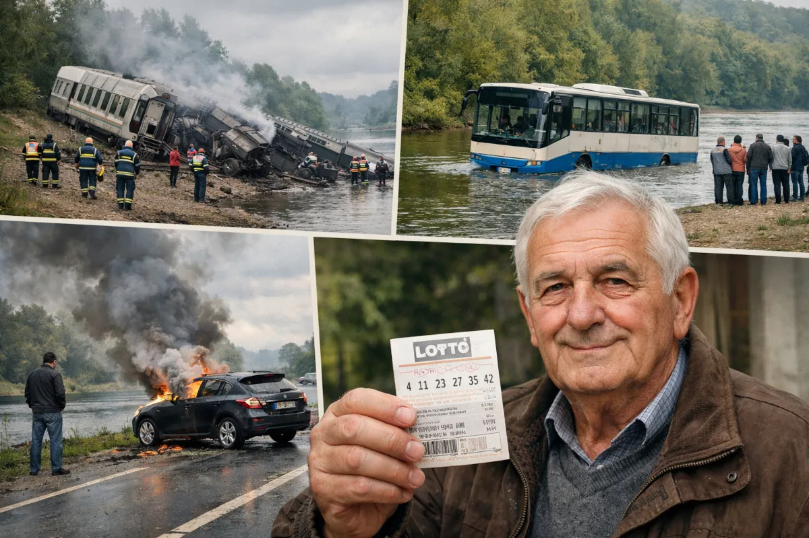

The Unlikely Survival Story of Franko Fargo
based on actual reports; the name has been changed

The Unlikely Survival Story of Franko Fargo
Franko Fargo was a music teacher who became internationally known for a series of dramatic accidents that he reportedly survived. Journalists sometimes called him "the world's luckiest unlucky man." His story has appeared in newspapers, magazines, and television programs because it reads like a news report filled with shocking headlines.
One of the earliest reported incidents occurred in 1962 when Fargo was traveling by train during severe weather. The train derailed and plunged into a cold river. Several passengers were injured, and some lost their lives. Fargo survived with relatively minor injuries, including cuts and bruises. According to interviews, he described the moment as chaotic and terrifying but said he felt fortunate to escape alive.
In 1963, Fargo was allegedly involved in a highly dramatic airplane accident. News-style retellings claim that a sudden problem caused the aircraft door to open mid-flight. Fargo was reportedly pulled out of the plane and fell from the sky, eventually landing in a haystack. He survived with injuries but recovered. This extraordinary event became one of the most frequently repeated parts of his story and helped build his reputation as an unusually lucky survivor.
Over the following decades, Fargo experienced several additional transportation incidents. In one case, a bus he was riding slid off the road and crashed into a river. He managed to swim to shore while others on the bus required rescue. In another event, his car suddenly caught fire during a journey. He exited the vehicle moments before flames consumed the engine. These repeated emergencies created a pattern that have fascinated reporters and readers alike.
Another widely shared story describes a near-fatal accident on a mountain road. Fargo lost control of his car, which crashed through a guardrail and fell down a steep slope. He was thrown clear of the vehicle and became caught in a tree branch, preventing a deadly fall. Although injured, he survived yet again. Such stories contributed to the public perception that he possessed extraordinary luck or resilience.
After decades of dangerous experiences, Fargo's life took a surprising turn in 2003. He purchased a lottery ticket and won a substantial cash prize, reportedly becoming a millionaire overnight. Unlike many lottery winners, he later chose to give away much of his wealth to friends and family. In interviews, he explained that he preferred a modest lifestyle and valued peace of mind more than luxury.
Franko Fargo's story continues to circulate in the media because it combines suspense, survival, and unusual fortune. However, while he did win the lottery and experienced several harrowing incidents, not every detail has been independently verified. In particular, the famous airplane accident remains disputed by journalists and researchers. Nevertheless, there are documented cases of people surviving extreme sky falls without a parachute. Though the incident is improbable, it's not impossible. Other parts of Fargo's story may be exaggerated, but they remain within the realm of possibility and continue to capture public imagination.